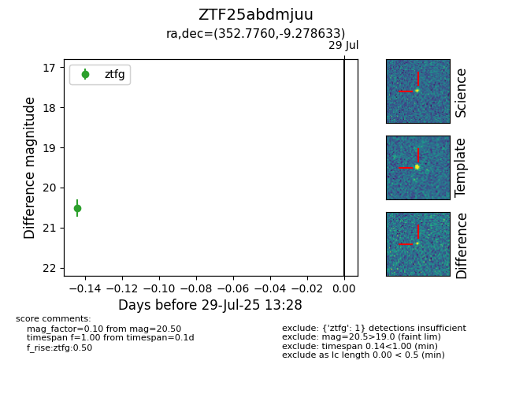

Target ZTF25abdmjuu at 2025-07-29 13:28, see:
FINK: fink-portal.org/ZTF25abdmjuu
Lasair: lasair-ztf.lsst.ac.uk/objects/ZTF25abdmjuu
ALeRCE: alerce.online/object/ZTF25abdmjuu
alt names
ZTF25abdmjuu (ztf,fink)
coordinates:
equatorial (ra, dec) = (352.7760,-9.27863)
galactic (l, b) = (72.4109,-63.95574)
photometry
last ztfg=20.50
1 ztfg detections
